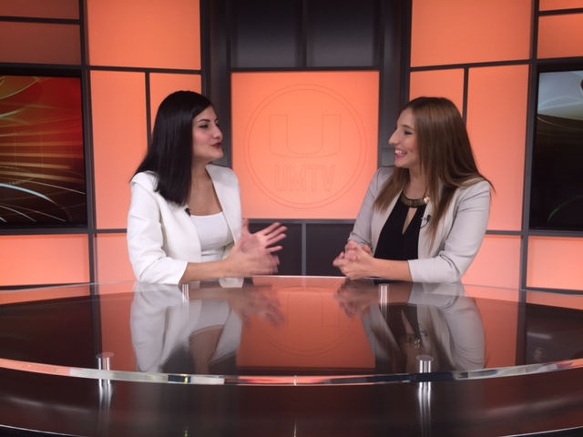
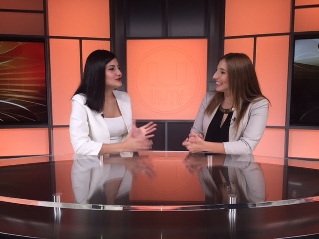

EDUCATION
University of Miami, Coral Gables FL
Bachelor of Science in Communication, May 2017
Majors: Broadcast Journalism & Public Relations
SKILLS
Fluent in Spanish
Adobe Premiere Pro CC
Panasonic HMC-150
Canon 5D Mark III
EXPERIENCE
Univision Network Communications Inc. Miami, FL
NewsPort Production Intern June, August 2016
- Shadowed the directors, floor managers, audio, graphic and camera operators for live TV shows
- Performed as a teleprompter operator for shows such as Al Punto con Jorge Ramos and Primer Impacto
- Acted as a lighting and wireless mic assistant during national TV show, Noticiero Univision
- Assisted the Univision 23 assignment desk by helping assign the news to camera men and reporters for 6 PM and 11 PM newscasts
- Worked side by side with producers and learned how to use iNews to create rundowns for live TV and radio shows such as Despierta America, Enrique Santos and Radio Mambi
University of Miami Television Station Coral Gables, FL
Technical Director January 2016, Present
- Provide technical directions and execute live newscasts
- Anchor and Reporter (Hard News, Sports and Entertainment) January 2015, Present
- Manage Unimiami, Pulse and Enterate newscasts in a variety of ways, including operating devices in the control room and anchoring a show
- Film and edit hard news and entertainment packages using Adobe Premiere Pro
- Write sports and hard news stories and present them in newscasts
- Establish strong communication skills, both verbal and written
- Promote enthusiastic and creative environment during the production of each show
Madame Cheese Restaurant & Bistro, San Jose, Costa Rica
Social Media Manager, August 2014- Present
- Manage Facebook and Instagram accounts
- Filmed and edited video content for commercials to be later promoted through social media
 
